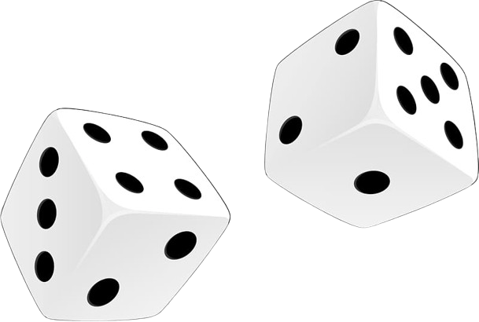

In the "Hog Project," I developed a Python-based simulator for the strategic dice game Hog, aiming to be the first to reach 100 points. My work involved implementing complex game mechanics, including unique rules like "Sow Sad" and "Boar Brawl," and crafting advanced playing strategies. The project progressed through multiple phases, where I honed skills in control statements, higher-order functions, and creating efficient, effective algorithms, culminating in a fully interactive game experience.